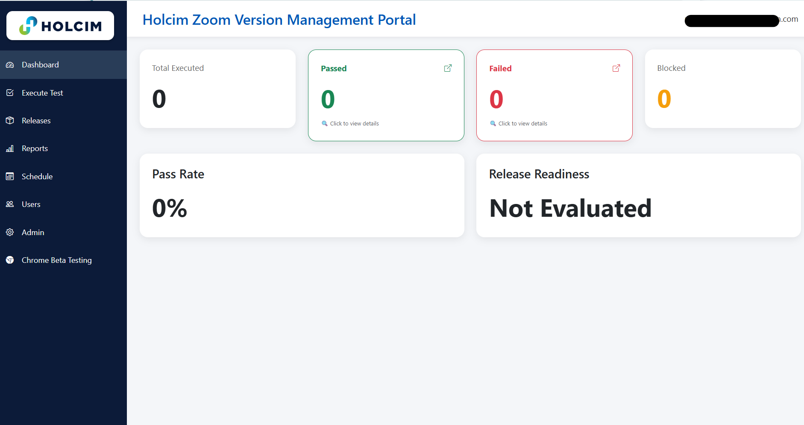
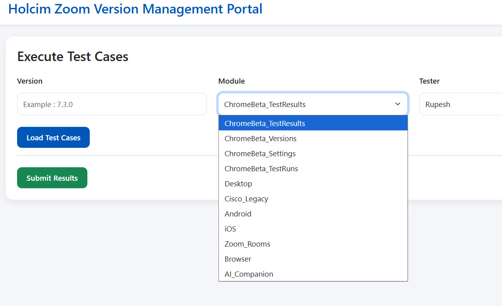
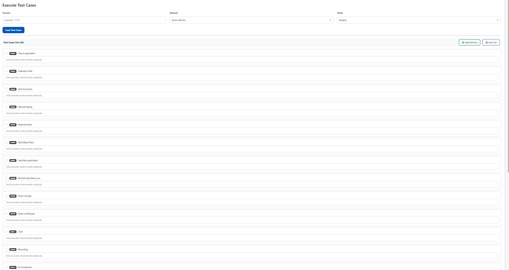
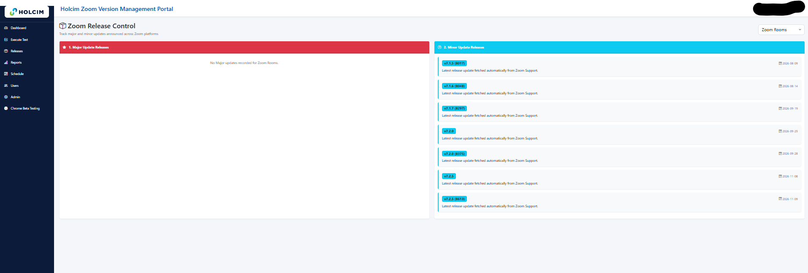
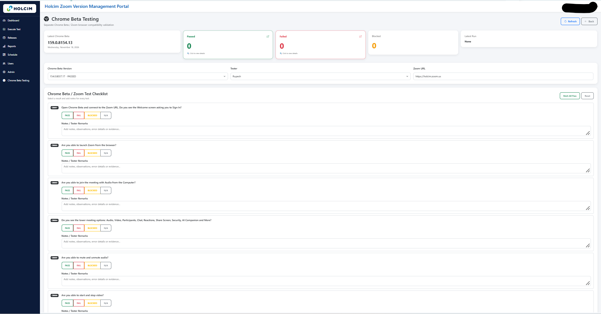

Project Overview
The Enterprise Zoom Version Management Portal is an internal single-page web application designed to standardize software release tracking, QA test execution, and schedule management. Its primary purpose is to replace fragmented manual tracking with a centralized, brand-aligned operational dashboard for IT and QA administrators.
Business Problem
Previously, version tracking, test reporting, and release scheduling required manual data entry across separate sheets, consuming recurring administrative effort each month and creating a high risk of human error. Uncoordinated rollouts and version mismatches risked meeting disruptions, deployment failures, and slow audit verification across corporate communication tools.
Solution Implemented
A modular, single-page application (SPA) interface was built using HTML, custom CSS, and JavaScript templating to dynamically switch between operational views without full page reloads. The solution integrates standardized corporate UI branding, modal-based user feedback, and structured financial ROI modeling to justify operational risk reduction.
Key Features
- Operational Dashboard: Displays real-time KPI cards, pass/fail status indicators, and high-level release health metrics in a responsive card layout.
- Test Execution & Validation: Provides a structured interface for QA testers to execute test cases, log results, and trigger confirmation modals.
- Release & Schedule Management: Centralizes upcoming version rollouts and release calendars to prevent uncoordinated deployments.
- Automated Reporting & User Admin: Offers dedicated views for generating release reports, managing portal users, and configuring administrative settings.
- Chrome Beta Testing Module: Includes a dedicated workflow to validate upcoming Zoom versions against Chrome Beta environments prior to production rollout.
Technology Stack
- HTML5 & CSS3 (Custom Styling): Structures the single-page portal layout, fixed sidebar navigation, responsive mobile breakpoints, and corporate color variables.
- Bootstrap 5.3.3 & Bootstrap Icons 1.11.3: Provides the grid layout, form controls, data tables, spinner loading states, and modal dialog components.
- JavaScript (Client-Side Routing & DOM Manipulation): Handles single-page view switching (Dashboard, Execute Test, Releases, Reports, Schedule, Users, Admin, Chrome Beta) and user session display.
- Google Apps Script Templating (<?!= include(...) ?>): Modularizes stylesheets, scripts, and feature views into separate HTML partials served within a web app environment.
- Microsoft Excel (Financial & ROI Modeling): Used to model 4-year manpower costs, licensing expenses, and operational risk-mitigation savings for stakeholder approval.
My Role & Contribution
I led the UI standardization, front-end styling refinement, and business case formulation for the portal, collaborating with AI assistance to iterate on CSS layouts, security reviews, and ROI calculations. Specifically, I customized the corporate branding theme, structured the financial justification model for leadership review, and audited the front-end code for security best practices.
Workflow
- 1. Portal Initialization & Authentication: The user opens the web application, triggering the topbar session loader to identify the logged-in administrator.
- 2. Navigation Selection: The user selects a functional module (Dashboard, Execute Test, Releases, Reports, Schedule, Users, Admin, or Chrome Beta) from the fixed sidebar.
- 3. Dynamic View Rendering: Client-side JavaScript routes the selection and injects the corresponding view into the main content container without reloading the page.
- 4. Test Execution & Data Entry: QA staff complete version checklists or schedule updates using standardized Bootstrap forms while a loading modal indicates active processing.
- 5. Confirmation & Audit Output: Upon completion, a confirmation modal notifies the user and updates KPI metrics and reporting tables for stakeholder visibility.
Challenges & Solutions
- UI Branding & Contrast Alignment: Transitioning between dark sidebar headers, logo container shapes, and a clean topbar initially caused text visibility conflicts, which were resolved using CSS custom properties and explicit contrast overrides.
- Justifying Financial ROI Beyond Minor Labor Savings: Direct time savings alone (1 hour/month) showed a negative return against build costs, which was resolved by incorporating avoided outage, error-prevention, and audit-readiness value into a 4-year ROI model.
- Front-End Security Hardening: Code review identified missing Subresource Integrity (SRI) hashes, inline onclick handlers, and lack of a Content Security Policy (CSP), leading to actionable remediation guidelines.
Business Benefits
- Elimination of Manual Tracking Overhead: Replaces repetitive monthly manual data entry, scheduling, and report compilation with a unified digital workflow.
- Reduced Rollout & Downtime Risk: Standardized pre-release testing and Chrome Beta validation minimize the likelihood of version mismatches or meeting disruptions.
- Improved Audit Readiness & Visibility: Centralized logging and real-time dashboard KPIs provide instant operational visibility for IT leads and compliance reviews.
Project Summary
Project screenshots
Screenshots supplied with the case-study document. Review all visuals for confidentiality before public release.




